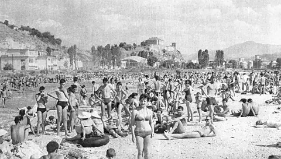
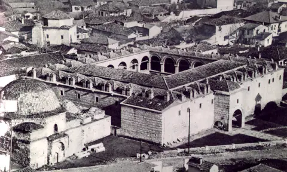
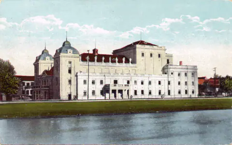

Alte Orientierungskarte
38 Sehenswürdigkeiten auf dem alten Stadtplan von Skopje. Tippen oder klicken Sie auf einen Punkt, um das Foto zu sehen.


Arabisches Haus

Betonbrücke

Bit-Pazar

Die Hauptpost

Stadtkrankenhaus


Stadtstrand

Daut-Pascha-Hamam

Holzbrücke

Eiserne Brücke

Bahnhof

Invalidenheim

Steinbrücke

Katholische Kirche


Kuršumli-Han

Mustafa-Pascha-Moschee

Nationalbank

Nationalbibliothek

Offiziersheim


Makedonija-Platz

Freiheitsplatz

Post 2


Messegelände


Hl. Demetrius

Sveti Spas

Parlament Mazedoniens

Denkmal für die gefallenen Kämpfer

Die alte Hauptstraße

Studentenwohnheim

Festung Kale


Theater

Kočo-Racin-Straße

Straße des 11. Oktober

Philosophische Fakultät

Hotel Makedonija
Panorama